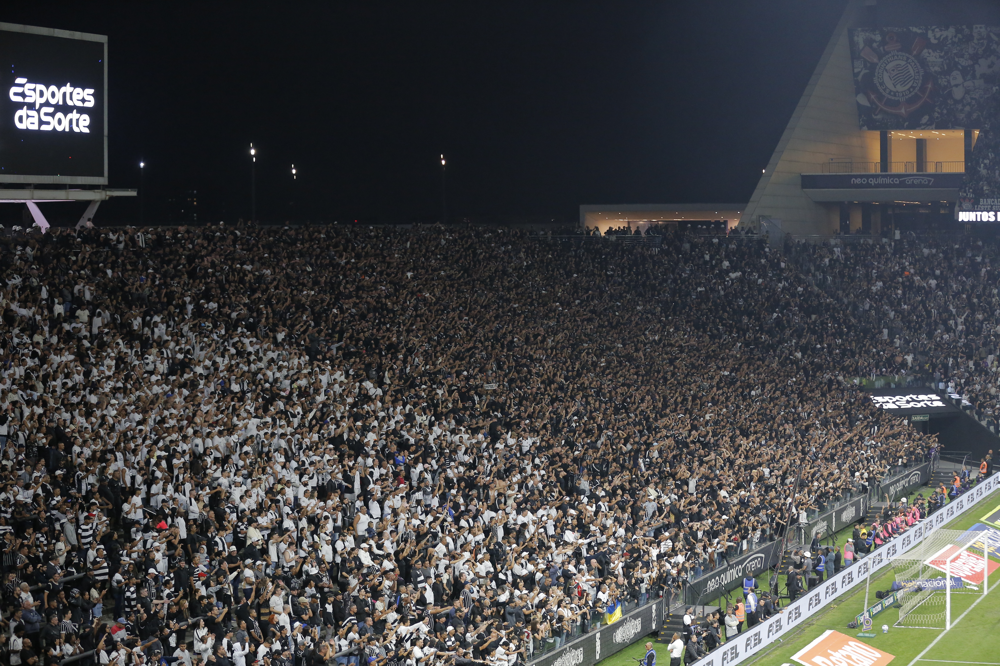
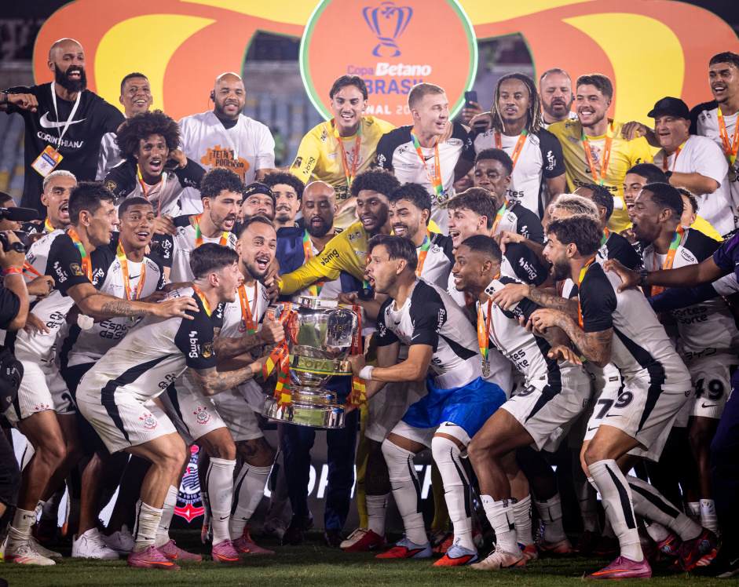

História do Clube
O Corinthians é um dos clubes mais tradicionais do futebol brasileiro e mundial, famoso por sua história e por sua torcida apaixonada, a Fiel.
Galeria de Fotos
| Escudo | Fiel Torcida | Conquista de Título |
|---|---|---|

|
 |
 |
Títulos Principais
- 2 Mundiais de Clubes da FIFA (2000, 2012)
- 1 Copa Libertadores da América (2012)
- 7 Campeonatos Brasileiros
- 3 Copas do Brasil
Vídeos do Timão
Clique no botão para assistir aos vídeos e jogos no YouTube: